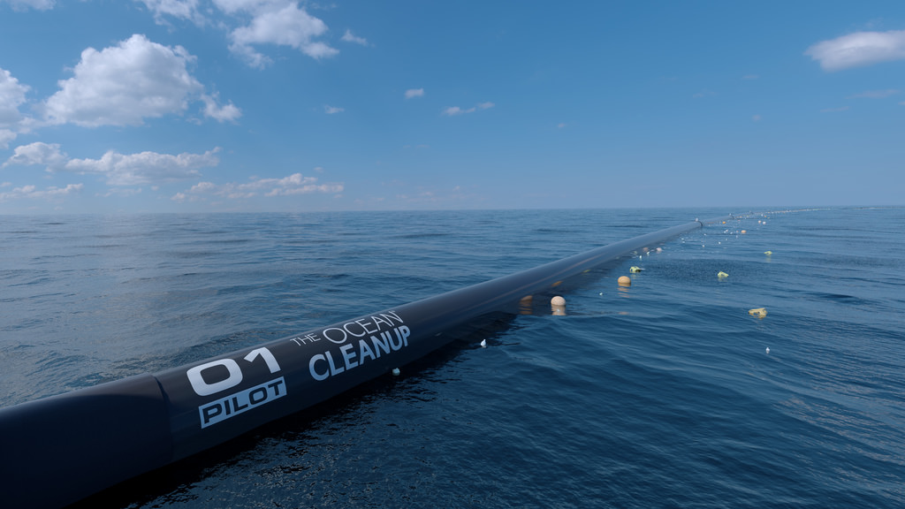

荷蘭22歲創業青年史萊特（Boyan Slat）的太平洋垃圾帶清理計畫出現重大的設計變更，而且進度將從原本的2020年底大幅提前，第一波的清理行動在未來一年內就可望啟航。
史萊特的非營利組織「海洋清理」（Ocean Cleanup）即將在太平洋上架設一垃圾清理系統（俗稱海洋吸塵器），移除漂浮在海面上的大量塑膠垃圾。 全世界海洋中的塑膠垃圾隨著時間被環流逐漸帶往五個主要的垃圾集中點。海洋清理組織的目標就是清理這些「太平洋垃圾帶」。
這些垃圾袋雖沒有堆成島嶼，經過這些地方的人們也表示並不會看到非常大量的塑膠垃圾，但是這些塑膠垃圾的確存在，既醜陋又危險。
海龜、海獅和海鳥攝食這些垃圾並且逐漸中毒。當塑膠逐漸分解成碎片顆粒，則從魚類進入食物鏈。
史萊特首次提出用65英里（104公里）長的V型圍欄蒐集垃圾。他在TED上發表的演說吸引大量關注，但是許多海洋科學家對於「打造有史以來最大離岸設備」的可行性持懷疑看法。
海洋清理團隊只有在實驗室中和以模擬進行測試，所以設計尚在理論階段。但是體積改小的新設計可能有助釋疑。